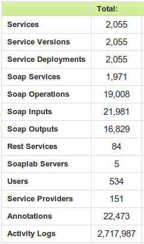

| Provider | Services | %age |
|---|---|---|
| EBI | 638 | 33.5% |
| INB | 466 | 24.5% |
| NCRI Genoa, Italy | 94 | 4.9% |
| Alberta | 81 | 4.3% |
| University of Manchester | 58 | 3.0% |
| Name | Frequency | %age |
|---|---|---|
| jobid | 6,929 | 31.5% |
| in0 | 2,681 | 12.2% |
| parameters | 1,664 | 7.6% |
| inputs | 1,220 | 5.6% |
| data | 883 | 4.0% |
| Name | Frequency | %age |
|---|---|---|
| in0 | 1,997 | 19.0% |
| parameters | 964 | 9.2% |
| data | 883 | 8.4% |
| in1 | 672 | 6.4% |
| jobid | 465 | 4.4% |
| Name | Frequency | %age |
|---|---|---|
| parameters | 1,648 | 9.8% |
| body | 946 | 5.6% |
| return | 679 | 4.0% |
| jobStatus | 575 | 3.4% |
| getResultsReturn | 439 | 2.6% |
| Name | Frequency | %age |
|---|---|---|
| parameters | 948 | 12.5% |
| body | 946 | 12.5% |
| return | 679 | 9.0% |
| result | 396 | 5.2% |
| getResultsReturn | 106 | 1.4 |
| Name | Frequency | %age |
|---|---|---|
| blast | 2,551 | 8.8% |
| ebi | 541 | 1.9% |
| kegg | 267 | 0.9% |
| dbfetch | 238 | 0.8% |
| ddbj | 233 | 0.8% |
| Terms | Frequency |
|---|---|
| "blast" and "clustal" | 6 |
| "fast" and "dbfetch" | 5 |
| "ebi" and "blast" | 5 |
| "ebi" and "clustal" | 5 |
| "blast" and "ddbj" | 5 |
| "wsdbfetch" and "dbfetch" | 5 |
| "ebi" and "ddbj" | 5 |
| "WSDbfetch" and "ddbj" | 5 |
| "WSDbfetch" and "blast" | 5 |
| "blast" and "kegg" | 5 |
| "wsdbfetch" and "fasta" | 5 |
| "WSDbfetch" and "ebi" | 5 |
| "blast" and "alignment" | 5 |
| Type | Count | %age |
|---|---|---|
| Availability checks | 4,067 | 84.7% |
| Test scripts | 734 | 15.3% |